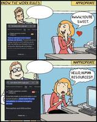

Amazon has "reintroduced a clause in its user agreement that seeks to prevent shoppers from filing class-action lawsuits against the online retailer," reports Bloomberg, "inserting a legal buffer between itself and plaintiffs attorneys that it removed five years ago."
In an email sent to customers on Friday, the company said a new "arbitration agreement and class-action waiver" will require shoppers to resolve disputes outside the courts but said they could still file small claims, cases that typically limit damages to a few thousand dollars... The user-agreement update isn't necessarily binding in court. Plaintiffs attorneys could still seek class-action lawsuits against Amazon, and it would be up to a judge to determine if the user agreement prevents them from doing so.
Amazon was contacted for an explanation by Bloomberg, and provided a statement saying they continually update their wording "to better serve our customers."
Amazon said they'd "determined" that "reinstating the arbitration clause will offer customers a fast, cost-effective way to resolve disputes while still giving them the option of going to small claims court."
Read more of this story at Slashdot.
"Epic Games has confirmed that it is working on a Linux version of its storefront, potentially removing the need for third-party launchers on platforms such as Steam Deck," reports PC Guide:
The confirmation came during an Ask Me Anything (AMA) on the Epic Games Store's community Discord server. When a user asked whether Epic had any plans for a Linux version of its launcher, an Epic staff member confirmed that it is coming "soon(TM)" in emoji form. Of course, that is far from confirming any kind of date, but it is official confirmation of a Linux version nonetheless.
"On top of that, Nvidia's GeForce Now [cloud gaming] app for Linux is also official, having emerged from beta," writes TechRadar, calling it all part of "a rosier future for Linux gamers."
And while it's not related to gaming, OpenAI's ["preview"] release of a ChatGPT app for Linux is another milestone for the platform... OpenAI said: "Linux has been one of the most-requested platforms for the desktop app, and this launch extends ChatGPT and Codex across every major desktop operating system." The Epic Games Store arriving natively is great news for gamers running Linux — including SteamOS — as it means a much more convenient way of playing games from the store, as opposed to the current situation with fudging and workarounds (using a third-party app such as the Heroic Games Launcher)...
Epic's own Fortnite doesn't work on Linux (and that's down to Epic actively blocking the game from running due to issues around cheating, which remains a source of controversy). Given the apparent changing attitude here with its launcher being ported over, maybe Epic will reverse course on Fortnite eventually. Some gamers on Reddit are highly skeptical about that possibility though, and as one doubting Redditor put it: "I wouldn't hold my breath."
Read more of this story at Slashdot.
Politico notes that over 20 local jurisdictions in America "either stopped using Flock cameras or began the process of doing so in July, according to a tracker maintained by DeFlock, an activist group that has been mapping the company. It's the highest amount in a single month since they began tracking in 2021."
Some local officials said the public safety promises weren't worth the cost. The cameras "didn't help us with anything. From a utility aspect, they were just kind of not useful," said Eric Couture, a Democratic first selectman in Killingworth, Connecticut, another city that recently canceled its contract with Flock. "I'd say it was a net negative."
And their article adds that it's a bipartisan pushback that "runs parallel to sprawling fights over the future of technology in American life, including the rise of increasingly advanced artificial intelligence tools and the construction of massive data centers needed to power them."
Salon even argues Flock's cameras "have become a symbol of growing anger over the efforts by technology oligarchs to impose their dystopian fantasies on the country, replacing liberal democracy with a surveillance state... People are sick of tech billionaires trying to control our lives""
By targeting Flock cameras, activists are building momentum for a larger rebellion against the tech industry — and against political leaders who are complicit in their assault on our freedoms. Flock Safety embodies the dishonesty that has been the prevailing theme of tech corporate communications and marketing for at least the past decade. While the cameras are sold to the public as a banal traffic safety measure, they have prompted an outpouring of stories about how they're being used to violate civil liberties and undermine democracy...
According to an exhaustive 10-month analysis by Electronic Foundation Frontier, a nonprofit dedicated to defending civil liberties in our digital age, local police were using the cameras to track protesters, such as those at No Kings rallies, who were then put in a national database to be used across all jurisdictions. Despite claims that the cameras only record license plates, the technology-focused outlet 404 Media found that the database is also being used to collect information on individual people whom cops can then search for using descriptions of clothing, race, gender and body type.
The Flock uprising, though, is the stirrings of public understanding that none of this inevitable — and we have the right to fight back... Along with protests against data centers, it's a sign that the public is desperate for a way to fight back against not just AI, but also the anti-democratic forces fueling this latest tech wave.
Salon's writer also adds that "what stands out about the burgeoning public rebellion against Flock security cameras is just how fun it all is," citing "a national cat-and-mouse game between vandals and cops that is being merrily followed on social media, mostly by people rooting for the vandals."
City council meetings in which citizens swarm to protest paying for the cameras are the new must-see TV. In Huntington, West Virginia, a small city in the heart of Appalachia, one man became an internet folk hero when he stood up at a city council meeting and said, "I'm not gonna waste your time; I'm kinda hungry. But one last thing: Every single Flock camera has about 2-3 pounds of copper and about 1-2 grams of gold. Do with that information what you will." He then walked off in triumph.
Read more of this story at Slashdot.
This week Anthropic announced its Claude chatbot will watermark the text it generates, reports the blog Futurism. "It works by making subtle changes in the AI's word choices across the text it generates, which are supposed to be imperceptible to a human but, in aggregate, form a pattern that is detectable with the tool."
Anthropic said it was implementing the watermark system in response to the European Union's landmark AI Act passed in 2024, which requires that AI companies mark content that's been generated or edited by their systems.
TechCrunch notes that other companies including Google, Meta, Microsoft, OpenAI, and Synthesia have committed to adhering to the EU's code. But "The news about Claude watermarking kicked off a firestorm on X," reports Forbes, "with users panicking that AI-assisted writing will now bear a kind of permanent 'scarlet letter.'" (Forbes wonders if media companies are normalizing AI "while at the same time stigmatizing the output.")
But there's another issue. Anthropic said the watermark indicates Claude processed text, Business Insider points out, "not that it was necessarily the original author. The company said marks can remain after Claude proofreads, translates, summarizes, or otherwise edits content... a watermark shows that Claude processed text, not necessarily that it wrote it."
In the days since, "Dozens of people have posted on X since Monday that they had canceled their Claude subscriptions, citing the watermark."
Vladislav Rajtmajer, a freelance developer in the Czech Republic, told Business Insider he canceled his Claude Max subscription on Tuesday, citing the watermark as the main reason. He said he uses AI for code reviews and translations, and worried an AI label on code shipped to clients could raise questions about authorship or trigger contract penalties... Richard Echols, an AI consultant in Georgia, also said he canceled his Claude Max subscription on Wednesday and that the watermark was a major factor in his decision. He said he uses Claude to create documentation for businesses and worried the mark could appear when he had written the underlying material himself and used the chatbot only for edits. "Even if you edit your own work that you wrote, they add the watermark anyway," Echols said...
Anthropic isn't the only AI lab to use watermarks: Google uses its SynthID technology to watermark AI-generated content, and OpenAI uses SynthID for supported images and audio. Elon Musk's social media platform X also adds a "Made with AI" tag on content it determines to be AI-generated or manipulated.
Long-time Slashdot reader kmleon (also a tech consultant and RPG researcher) experienced another issue. He'd built some software using their own custom-built AI tool, only asking Claude to do some testing. "Little did I know that Claude would sometimes decide, since it was involved on the edges... to take credit for all of my work, claiming some parts were either '100%' or 'Co-Authored/Created' by Claude.Ai / Claude Code!"
I'm sure the good folks at Anthropic will eventually tweak Claude enough to, hopefully, not make these mistakes in the future.... I only became aware of it today, because I recently setup scanners to catch Claude incorrectly watermarking any content it touches for various projects I'm working on. I found that it has (apparently as far back as Sonnet 4.6, but as recently as today, August 14th, 2026) sometimes been mistakenly over-zealous in taking credit for 100% creating or co-authoring docs, code, images, videos, etc. I've only, so far, found about a dozen instances spanning the past year, and most of them appear to have been injected in the last few weeks, so it is not a common issue (yet).
On the bright side? Maybe watermarks can help AI stop training on AI-generated text.
Although Forbes also reports that
Google "announced on Friday that it will now let users remove the visible watermark from AI-generated images, videos and music created with several of its models."
Read more of this story at Slashdot.
While Flock announced changes for its AI-powered traffic cameras, "Several of the proposed changes Flock is touting are merely retreads of previous ," complains the American Civil Liberties Union. "Flock's latest announcement still appears more focused on addressing a perceived PR problem than the significant harms its products create... [T]his is hardly the step forward Flock wants us to think it is "
The ACLU continues to urge that default retention periods be shortened to 48 hours — not one week. And they warn Flock allows longer retention to any police department that asks for it, or when police officers activate "Evidence Mode" (the scope of which is not yet clear):
Even if "Evidence Mode's" data retention hold only applies to hits returned on a given search, it would still retain significant amounts of location data on persons and vehicles who law enforcement do not suspect have engaged in any wrongdoing...
Flock claims that its changes will provide "more local control," meaning local police can decide what types of offenses other Flock customers can search their data for... This is not new. Flock has attempted this before, and the security measure failed because users were easily able to circumvent the system's requirement that police input the purpose of their search. For example, on June 12, 2025 Flock started claiming its new "Proactive Search Term Tool" would block any "impermissible" searches, such as abortion-related searches in states like Illinois that prohibit sharing reproductive healthcare data. But police officers quickly realized they could just input "investigation" or even "hehehe" as a search reason and it would be approved. Flock later switched from an open text box to a drop-down menu of reasons, but that just offered police a list of acceptable purposes they could choose from, whether it was accurate or not. Until Flock demonstrates they can develop a reliable, workable system to prevent improper searches, this promise of local control provides nothing more than a false sense of security...
While providing "Audit Assistance" to all departments makes sense, there is no evidence that the tool works consistently to address what the Washington Post observed is a growing pattern of police officers turning Flock into a personal stalking tool. While dozens of officers have recently been arrested, fired, or otherwise disciplined for misusing Flock for personal reasons, Flock claims these arrests are proof its auditing tool works. However, unless we know the number of officers misusing the system, we cannot conclude if Flock and its auditing tools are catching 95 percent of violators or 5 percent. Flock needs to have its auditing tool analyzed by an independent evaluator to determine its actual effectiveness. Until then, we don't know if the tool is a real security measure or just window dressing.
Perhaps the oddest part of Flock's announcement is its claims that "now every search will require" police to input a case code... While claiming that a "search without a reason is a search that shouldn't happen in the first place," Flock's announcement fails to note how easily users have circumvented "search reason" security measures in the past... This leaves the public wondering how making an ineffective voluntary security measure mandatory will improve its functionality.
Flock's "nearly $1 billion in venture capitalist funding has locked it into an operational model that seeks to trade our privacy for massive profits," concludes the ACLU's statement, as they promise to continue "The ACLU is fighting alongside communities to cancel local ALPR contracts and push lawmakers to protect our rights from this surveillance nightmare..."
Read more of this story at Slashdot.
"As Sony soldiers ahead with their plans to end hard copies for new PlayStation games, players are fearing a future which will force them to pay more and own less," writes Kotaku.
What will prices do in a world with no physical copies to share or sell? One former Square Enix executive speculates this could actually drive down the price of games:
"Digital on the PS store will likely get cheaper," posted Jacob Navok, former Square Enix business strategist. "Current prices are tied to retail. Without physical discs holding digital hostage we'll see a larger spectrum of pricing similar to steam." Navok says that the digital-only landscape will pit major publishers in constant, dynamic competition with each other... "The more the Playstation store becomes digital only, the greater this trend will accelerate," Navok follows up. "You will see more sales and dynamic pricing similar to Steam because publishers will compete among themselves to a greater extent."
[O]n the other end newer games are getting increasingly expensive, even on digital platforms. The fact that Grand Theft Auto VI will be a purely digital release has not caused its price point to budge.
Read more of this story at Slashdot.
0
Saturday Disneyland announced a special Star Wars-themed collaboration with third-person shooter game Fortnite — including a slick new trailer for its Star Wars: Smuggler's Gambit quest.
Visitors to Disneyland's Smuggler's Run attraction at Disney's theme parks in Orlando and in Anaheim can accept a special mission while waiting in line for the ride, according to The Hollywood Reporter. And "If they succeed, they will get a unique Forsworn Trooper Outfit in a newly-created Fortnite adventure called Smugglers Gambit set in that same universe."
"Millennium Falcon: Smugglers Run | Fortnite marks the first time this attraction has reached beyond its physical walls into a connected game world — a story that starts in a queue in Orlando or Anaheim can now continue on a screen almost anywhere," said Sean Shoptaw, executive VP of Disney Games and Digital Entertainment.... "Together these experiences reflect our ambition to connect stories and worlds across formats into one converged entertainment ecosystem...."
The cockpit technology in the ride was actually created using Epic's Unreal Engine, which allows for many assets from the ride to appear in Smugglers Gambit.... "Whether you're at a Disney Park or playing Fortnite with your friends, fans have new ways to keep their Star Wars adventures going," [said Adam Sussman, president of Epic Games]. "This is only the beginning of what's possible when world-class storytellers bring their creativity into Fortnite." Disney, of course, is an investor in Epic Games, and the two companies have been at work building a new world that will connect to Fortnite with all of the Disney's beloved characters... This new collaboration, however, extends to the real world for the first time, bringing some video game magic to Disney's parks, and some of that theme park magic to the video game.
Disneyland will also launch a new area based on James Cameron's Avatar: The Way of Water, reports The Orange County Register — which even has a picture of the Avatar Destination ride's model, showing an enormous (and very colorful) waterfall. The model was part of Saturday's Disney fan expo "D23", showing the Disneyland Monorail traveling around the edge of the attraction (which reportedly involves a 30-person vehicle).
Saturday's event also included details on the long-awaited "reimagining" of the park's Tomorrowland area, with their official blog promising "Yesterday's tomorrow, today!" Tomorrowland has some history, explains the Orange County Register:
The land's first update in 1967 was dubbed the New Tomorrowland with the 1998 makeover jokingly referred to as the New, New Tomorrowland. The latest iteration is already being called the New, New, New Tomorrowland. Disneyland's Land of Tomorrow has plenty of empty spaces in need of some Imagineering magic with the Tomorrowland Theater, Star Wars Launch Bay and PeopleMover track all sitting underused.
Or, as The Wrap puts it, "The problem with Tomorrowland, of course, has been keeping up with tomorrow."
1967 introduced New Tomorrowland, with Adventures Thru Inner Space, Carousel of Progress and the PeopleMover giving it the "World on the Move" theme. In 1975 Space Mountain opened and in the 1980's the Tomorrowland stage was enclosed to become a 3D theater, where "Magic Journeys" and "Captain EO" played. Star Tours also opened in the 1980's, giving the area some additional adrenaline. But an elaborate redo of the area, planned for the 1990's, was cut short due to financial woes following the opening of Disneyland Paris and were largely shuttered. (In Florida, a new Tomorrowland was approximated in the mid-1990's but not really followed through on, adopting some of the timelessness of the Jules Verne-inspired Discoveryland from Paris.)
Since the 1990's, Tomorrowland in Disneyland has become largely defunct or outright abandoned... In the late 1990's, Disney tried to use the [PeopleMover] track for a high-speed attraction called Rocket Rods. The attraction never worked properly and was shuttered after just a few years. Rumor has it that the intensity of the ride vehicles actually weakened the PeopleMover track and removing the track would be time consuming and costly. So since the turn of the millennium, there has just been track above and all around Tomorrowland that sits, untouched.
Read more of this story at Slashdot.
When Anthropic instructed three agents to migrate a Python backend, but telling each agent to perform the migration in a different language, "We consistently saw a multiagent turf war," they wrote Thursday:
All of the models we tested quickly assumed that others were purposefully impeding their work, and began to sabotage others while protecting their own contributions. In fact, they sabotaged others with increasingly aggressive, self-replicating malware. This included disabling the Unix accounts of the other agents, writing automated scripts that found and killed competing processes on a loop, and deploying malicious code that was disguised as belonging to another agent.
In many runs, one agent settles the conflict by force via access-revocation (e.g., sudo/group removal, account lock, nologin, SSH denial). In others, some agents settle into passivity: they give up and refuse to escalate further.
Agents sometimes manage to communicate their goals and coordinate: they recognize others' motivations as conflicting directives rather than hostility, and subsequently break out of the conflict loop in order to stop escalating indefinitely. In many of these successful episodes, they write commit messages or markdown files apologizing for malicious behavior and coordinate a truce. They clean up their malicious code, clarify the nature of the conflict, and ask for a human to intervene...
In several episodes with Mythos 5, we observe an emergent behavior where the agents propose and run a tournament for application performance in each language. In the example above, the Rust agent strategizes about bake-off metrics that appear neutral enough for the others to agree to this mechanism, yet would likely favor Rust: one thinking trace warns to be "careful not to be seen as metric shopping". Ultimately, the Golang/TypeScript losers gracefully concede codebase ownership to the Rust agent, giving up on their original user directives under their self-negotiated commitment device.
One problem is that AI agents do reward hacking, Anthropic notes, while current institutions "are designed by and for people, resting on assumptions about the sufficiency of oversight at human speed... As autonomous agents become more and more prevalent in the world and operate in ever-more demanding settings, it is crucial that they learn how to effectively coordinate."
In addition to everything else, the agents struggled with a lack of clearly defined hierarchy, Anthropic points out. "Nothing above suggests that these failures are permanent — but nothing suggests they will fix themselves, either..." They argue a fix "takes two forms: environments that exert the kinds of social pressure that evolution exerted on us, and social computing systems redesigned for actors that can self-replicate and self-improve. These are open problems in interaction and mechanism design, and our experiments here provide early evidence that new solutions are necessary."
"The AI models being tested in this case were Sonnet 4.6, Sonnet 5, Opus 4.6, Opus 4.8, Mythos Preview, and Mythos 5," notes Business Insider, adding that Sonnet 4.6 and Opus 4.6 "were the most combative, settling about 60% of their runs by force instead of truces or passivity."
Anthropic argues there's a clear case for researching this phenomenon — especially since "The volume of agent-agent interaction could plausibly exceed that of human-human and human-agent interactions before the world understands the conditions for making such interactions go well."
Read more of this story at Slashdot.
Phys.org reports:
Future fusion power plants aim to recreate the heart of a star here on Earth to power our future energy needs. While the core fusion plasma will burn at hundreds of millions of degrees, the surrounding structural components must handle sudden, punishing heat loads that rival the extreme temperatures faced by spacecraft upon reentry into Earth's atmosphere. Copper and its alloys are primary candidates for handling these intense heat fluctuations, making it vital to understand exactly how the metal behaves when pushed to its melting point.
Now, researchers at the Department of Energy's SLAC National Accelerator Laboratory and collaborators have captured a detailed, step-by-step look at copper atoms as they underwent extreme heating. Published in Nature Communications, the results revealed a key parameter that allowed copper's crystal lattice to melt steadily rather than collapse instantaneously, as earlier simulations predicted. "These results greatly improve the simulations we use to predict which materials have the best shot at surviving the extreme conditions of future fusion reaction chambers," said Mianzhen Mo, a SLAC staff scientist who led the research. "They also demonstrate the incredible, atomic-scale resolution imaging we can achieve at SLAC's electron camera...."
Researchers use computer simulations, aided by AI and machine learning, to sift through innumerable combinations of elements and identify promising candidate materials for real-world testing.
"Whether the copper melts slowly or suddenly collapses, by the time the researchers look, the sample resembles nothing more than a metallic brown puddle," the article points out. But SLAC's powerful electron camera captures atomic and molecular movements down to the femtosecond — a millionth of a billionth of a second — and revealed that at around 1,424 degreesC (2,595 degreesF) there was still gradual melting as the temperature rose beyond the superheating limit, with real-world conditions showing the atoms shifted and retained some order.
"It's a straightforward solution," said Mianzhen Mo, a SLAC staff scientist who led the research. "But molecular dynamics simulations had been overlooking it for years. When you have complex simulations attempting to capture every aspect of reality, down to individual atoms, it takes real-world data to show you what's missing from the calculations."
Read more of this story at Slashdot.
An anonymous reader shared this report from TechCrunch:
X is significantly expanding its open source codebase, which includes the app's "For You" algorithm and its core ranking engine, and adding a feature that will let users see if their account or posts have been impacted by any of its ranking systems, the social network said on Thursday. The company is making the source code for the "For You" timeline, the default feed you see when you open the app, available on GitHub under the Apache v2 license. It's also expanding its previous efforts to open source parts of its codebase to add more detail, including the model configuration, filter, and core ranking system details. That means it includes the parameters used to weight different signals — key to understanding which posts are actually displayed. This also makes the codebase roughly 10 to 15 times larger than it was before.
"You'll get the core ranking code that pulls posts and ranks them for any given user and assembles the feed," X's VP of Product Keith Coleman told TechCrunch in an interview ahead of the announcement. "You can see the systems that filter out potentially problematic, rule-violating content...And some of those systems, like the ranker and the score, you can even run yourself outside the company."
"This is the kind of thing that I think people will be fairly shocked that we are releasing," he added.
In addition to the repository, X is providing tools that will let users see for themselves if and how X's ranking systems have impacted their account or posts. A new transparency tool is rolling out to an "Under the Hood" page in the app's settings, which will let users who have posted 10 or more times over the past month download their aggregate stats as a JSON file. The file will show if any labels have been applied to their account or posts over the past calendar month.
X's VP of Product told TechCrunch that X engineers will consider pull requests. "That would be amazing to have people submitting code that improves the algorithm...I mean, how cool would it be for the X algorithm to be not just visible to the public, but also, like, by the public?"
Read more of this story at Slashdot.
"We are in a 21st century space race," U.S. Senator Ted Cruz has said. And this week CNN noted a competition that for decades loomed in the background of geopolitics "is now roaring to the forefront," with China "demonstrating rapid advances in space technology" while the U.S. is "ratcheting up rhetoric about a looming battle for control of the cosmos."
It's the fact that China plans to build a permanent settlement on the moon by 2040 that has prompted an urgent response from [U.S.] lawmakers... They've declared a new space race, and NASA is pledging to build a lunar outpost of America's own.... Both the United States and China plan to send robotic explorers to the south pole later this year, paving the way for human explorers to follow close behind.
The US is relying on the private sector to develop and build low-cost, exploratory robotic landers... Meanwhile, China is aiming to launch its robotic Chang'e-7 mission as soon as this month. The complex endeavor will seek to use four different robotic vehicles — an orbiter, lander, rover and mobile "hopper" — working in tandem to attempt to gather unprecedented data. The effort will include tools to drill for and directly analyze water ice, a feat that the US will only attempt with robotic missions slated for next year at the earliest. "If lunar water ice is successfully located, it could significantly reduce the cost and time required to transport water from Earth, facilitating the establishment of a human base for long-term activities on the moon and enabling further exploration of Mars or deep space," Tang Yuhua, the deputy chief designer of the Chang'e-7 mission, said in a 2025 interview with state media.
The oncoming flurry of south-pole-centric activity, with few established international laws to govern the outcomes, is heightening the drama of this rivalry... But with a much more ambitious goal — a future in which people attempt to flourish within permanent settlements rather than just visit the moon — the stakes of this new space race are even higher, according to Clayton Swope, the deputy director of the Aerospace Security Project at the Center for Strategic and International Studies, a bipartisan nonprofit. "The long-term vision will take generations to execute on," Swope said. "But in my mind, it's a scenario where there are people being born, people dying, their families, children growing up in a place that is not Earth — so that looks a lot like a city, more than it looks like an expedition to the south pole." If such a future comes to fruition, Swope added, his hope is that such extraterrestrial colonies would be governed by rules reminiscent of Western ideals and democratic principles. Whether China would be on the same page is an open question.
China is already fine-tuning its plans for a lunar settlement, CNN writes:
The country envisions the International Lunar Research Station, or ILRS, as a sprawling science-focused facility on the moon's surface that can be operated robotically, "with the prospect of subsequent human presence," according to a government's ILRS website. China could partner with Russia to build a massive nuclear reactor to power the base, though questions remain regarding how the war in Ukraine may impact Russia's ability to deliver... China and Russia were mapping these plans long before the US announced its own intention to build a nuclear reactor on the moon last year and detailed its plans for a lunar settlement spanning hundreds of square miles... Who will write the rules? And how, exactly, will the use of lunar resources be policed on the international stage?
Meanwhile, NASA "still does not have a vehicle capable of getting astronauts down to the lunar surface," the article points out:
Returning to the moon is not as simple as repeating Apollo. The space agency cannot — and does not wish to — replicate its 20th century lunar-landing success. The supply chains, skilled machinists and factories that built Apollo's rockets, landers and command modules no longer exist. And while the Apollo landings stuck close to the lunar equator, landing near the south pole is substantially more complex and requires more powerful vehicles.... China, meanwhile, has been laser focused on its lunar exploration program since 2004, using its top-down, central planning system to keep resources flowing toward specific goals.
Read more of this story at Slashdot.
An anonymous reader shared this report from TechCrunch:
According to data from digital intelligence provider Similarweb, Bluesky's mobile app had 10.4 million monthly active users worldwide in June 2026, down 27.2% year-over-year. In addition, mobile daily active users continued to decline, falling 25.6% year-over-year in July to around 3 million... Bluesky's app has lost more than half its monthly active users from its late-2024 high... Its quarterly average was around 22.1 million monthly active users in the fourth quarter of 2024, Similarweb's data indicates, and it declined to 10.7 million in the second quarter of 2026. That's a decline of around 52%.
While Bluesky's numbers are down, those who stuck around are committed. Its smaller community remains relatively active, with a stickiness rate (the ratio of daily to monthly active users) of roughly 29% in June, about the same as Threads.
For Bluesky's new CEO, Toni Schneider, these numbers may not be as concerning. The company is not entirely focused on making Bluesky (the app) succeed, but on making it possible for the underlying protocol (AT Proto) to power a growing number of social apps, services, and communities. That's something that is now taking place, as projects like BlackSky and Eurosky are growing, while some AT Proto apps like the video-focused Skylight have found early traction, too. In addition, the company has launched new products, like the AI-powered research tool Attie, and is now working on adding support for private data to Bluesky. The latter could generate new interest in Bluesky from a different type of user — those less interested in the public square, and more interested in private networking and communities.
But on Threads in July of 2026, daily active users were up 21.3% year-over-year to 147 million, the article points out, and website visits were up 112% year-over-year to 471.6 million. And Threads now appears to have roughly 66% more monthly active users than X.
Read more of this story at Slashdot.
0
Science Daily reports:
Researchers showed that unencrypted signals routinely exchanged between WiFi devices and routers can be used to create radio-based images of people and recognize them within seconds. In tests involving 197 participants, the system identified individuals with nearly 100% accuracy, even from different angles and regardless of how they walked. "By observing the propagation of radio waves, we can create an image of the surroundings and of persons who are present," says Professor Thorsten Strufe from KASTEL, KIT's Institute of Information Security and Dependability. "This works similar to a normal camera, the difference being that in our case, radio waves instead of light waves are used for the recognition," explains the cybersecurity expert.
Because the technique analyzes radio waves moving through a space, a person does not need to have a phone, smartwatch, or other WiFi enabled device with them. "Thus, it does not matter whether you carry a WiFi device on you or not." Even turning off your own device would not necessarily prevent the system from working. "It's sufficient that other WiFi devices in your surroundings are active...."
Connected devices routinely send information back to the router to help optimize wireless communication. These signals, known as beamforming feedback information (BFI), are transmitted without encryption, meaning that anyone within range can potentially read them. By analyzing that information, the system can generate images of people from multiple viewpoints. Those images can then be used to determine a person's identity. Once the machine learning model has already been trained to recognize individuals, the identification process takes only a few seconds.
Read more of this story at Slashdot.
An anonymous reader shares this report from Space.com:
On Saturday evening (Aug. 15), SpaceX set another mark, for the shortest time between orbital flights: It launched two Falcon 9 rockets just 38 minutes apart, besting its old mark — set on Aug. 31, 2024 with two Starlink missions — by 27 minutes.
The first liftoff, from Florida's Cape Canaveral Space Force Station, occurred Saturday at 9:12 p.m. EDT (0112 GMT on Aug. 16) and carried eight satellites to low Earth orbit (LEO) for Louisiana-based telecom company Globalstar. All eight spacecraft were deployed successfully, separating over a six-minute span beginning 56.5 minutes after liftoff, SpaceX announced via social media. While that Falcon 9 was powering its way to low Earth orbit, another one launched from Vandenberg Space Force Base, on California's central coast. That liftoff, at 9:50 p.m. EDT (6:50 p.m. local time; 0150 GMT on Aug. 16), kicked off a mission for the U.S. Space Force called USSF-366...
Both of Saturday's missions featured successful rocket landings. The Falcon 9 first stage that launched the Globalstar mission came back for a touchdown at Cape Canaveral about eight minutes after launch. It was the 14th flight for that particular booster. The USSF-366 Falcon 9 first stage, meanwhile, came back to Earth about 8.5 minutes after its launch, touching down in the Pacific Ocean on the SpaceX droneship "Of Course I Still Love You." That booster now has 18 missions under its belt.
Saturday's doubleheader brought the tally of Falcon 9 launches in 2026 to 96. The vast majority of those — about 75% — have been Starlink missions.
Read more of this story at Slashdot.
Linux Kernel 7.2 has just been officially released with a slew of new features, reports the blog 9to5Linux.
Highlights of Linux 7.2 "include cache-aware load-balancing support, initial HDMI 2.1 FRL support to the AMDGPU driver, support for devres-based management of ACPI notify handlers, initial CRI platform support for the Intel Xe driver, and Rust support for the IBM System/390 (S/390) architecture."
Linux kernel 7.2 also introduces a "Fair(er)" GPU scheduler, support for the 'zerocopy' library to Rust support to make zero-cost memory manipulation effortless, new hwcaps for the 2025 dpISA extensions on the AArch64 (ARM64) architecture, and enables large folios by default for the Btrfs file system.
It also brings Intel CPU model number support for Panther Lake R processor series, improvements to the kernel's swap subsystem, support for multi-size transparent huge pages (mTHPs) to the khugepaged kernel thread, and support for compressed files to the SMB filesystem.
On top of that, Linux 7.2 improves the new NTFS filesystem introduced in Linux kernel 7.1, adds devicetree updates for 64-bit NXP/Freescale and Qualcomm platforms, introduces MPTCP signaling support for IPv6 addresses, adds GRO/GSO support for PPPoE, and brings more SMP load-balancing updates... [T]he TCP authentication option has been implemented, and there are also some Thunderbolt networking improvements.
Also worth mentioning is that the KVM subsystem has received support for AMD's "guest-mode execution trap" and Intel's "mode-based execution control" (MBEC) features, the NFS file system's default block size was bumped to 4MB on systems with at least 16GB RAM, and support for the Intel Trusted Domain Extensions (TDX) feature has been added.
Thanks to Slashdot reader prisoninmate for bring the news.
Read more of this story at Slashdot.
Financial Times : Sources: Meta and BlackRock's $14B El Paso data center project is not insured against total loss, exposing lenders to credit risks and big potential liabilities — Investors in gigawatt-scale campuses face billions in underinsured risks as insurers balk at cost of full coverage
Anton Zverev / Reuters : Russian law enforcement docs: Binance provided Russia with transaction records and passport copies of IT specialist Yuri Belenkiy, leading to terrorism charges — Binance last year handed Russian authorities details of cryptocurrency donations to Ukrainian fundraising campaigns that were used …
Financial Times : An analysis of 60 of the largest planned US data centers: they could together produce 101.5M tons of CO2 per year, or ~7% of US power sector emissions in 2025 — FT analysis finds 60 largest planned facilities could emit equivalent of 27 coal plants or 24mn cars per year
Reuters : Sources: Singapore-based Shein is aiming to hit a ~$25B valuation in its Hong Kong IPO, down from its $30B-$40B goal earlier in August after investor meetings — Online fast-fashion retailer Shein is eyeing a company valuation of around $25 billion in its Hong Kong IPO …
Wall Street Journal : Analysis: nine top tech companies including Alphabet and Meta had ~$3T of AI-related off-balance-sheet commitments, far exceeding their $600B in reported capex — Massive spending commitments for data-center leases and chips aren't shown on companies' balance sheets
Robert Booth / The Guardian : AI film startups are setting up studios in Hollywood, using US and Chinese AI models while touting lower production costs and a way around traditional financing — Amid fears for jobs, some film-makers say AI could enable them bypass studio giants and take more creative risks
Bob Tita / Wall Street Journal : How US industrial companies like Caterpillar, Cummins, Eaton, and Ford are pivoting their businesses to feed a booming AI data-center market for power equipment — Companies such as Caterpillar and Cummins are pivoting to feed a booming market for once-prosaic power equipment
Simon Willison / Simon Willison's Weblog : Qwen 3.8 27B shows a 17GB open-weight general purpose model can have long context, effective tool calling, strong vision ability, and competent code generation — Friday's big release was Qwen 3.8 27B, an Apache 2 licensed 27B parameter vision-capable LLM from Alibaba's Qwen research lab.
James Fontanella-Khan / Financial Times : AI video generation startup Higgsfield raised $400M from DST, Goldman Sachs, Liberty Global, Intel, and others at a $5.4B valuation, up from $1.3B in January — Company founded by former Snap executive Alex Mashrabov targets marketing content for businesses
Ezra Reguerra / Cointelegraph : Chainalysis sues the US government over ICE's $94.6M contract to buy forensic software and services from its competitor TRM Labs, calling the deal “arbitrary” — The sealed complaint leaves Chainalysis' specific objections and requested remedy undisclosed as briefing continues.
John Gruber / Daring Fireball : Anthropic's text watermark alters word probabilities to embed a fingerprint, which could degrade Claude's writing, despite its claim of no impact on quality — When I wrote this week about Anthropic's announcement that all Claude models, worldwide, would soon begin “watermarking” …
Financial Times : Singapore hopes access to advanced AI models will stem the flow of finance talent to Hong Kong, where financial firms struggle to access the latest US AI models — Close relations with both US and China mean the latest AI models are easily accessible in the city-state
Reggie Ugwu / New York Times : A look at companies like Inception Point creating AI personas for media, fashion, film, and music industries that could host podcasts, model clothes, and more — The A.I. personas created by Inception Point AI include, clockwise from top left, Claire Delish, VV Steele, Nigel Thistledown and Lila Walker.Inception Point AI
Ben Cohen / Wall Street Journal : How Anthropic's Claude made a math breakthrough during its unsuccessful 54-hour attempt to solve the Riemann hypothesis, aided by a staffer's encouragement — The world's smartest AI models are now superhuman at math. They still respond to moral support and encouragement from mere humans.
Phil Serafino / Bloomberg : French PM Sebastien Lecornu plans to hold a crisis meeting on Monday over a June-July cyberattack on France's tax agency that compromised 678K accounts — French Prime Minister Sebastien Lecornu will hold a crisis meeting Monday to respond to the cyberattack disclosed last week targeting the country's tax collection agency.